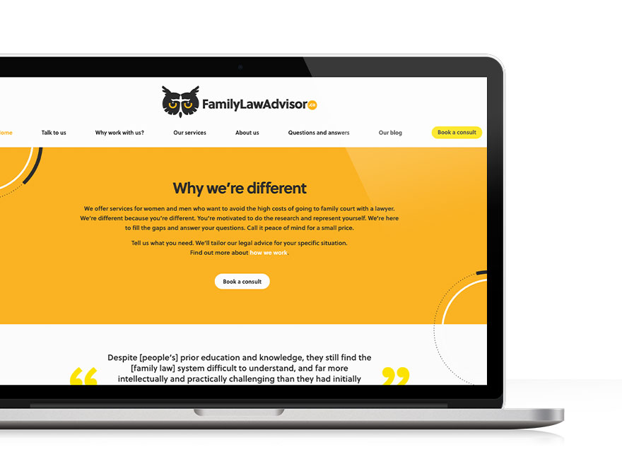
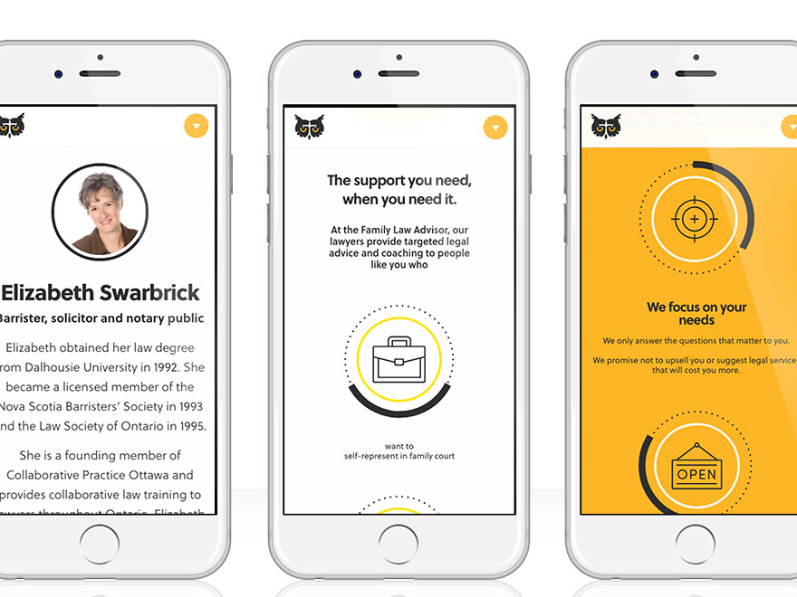

<!--Work Preview section-->
<section class="offset section">
			
	<!--Inner content-->
	<div class="innerContent">

		<!--Container-->
		<div class="container clearfix">
			<div class="fifteen columns">
				<div class="work-preview-close"></div>
			</div>
		</div>
		<!--Container-->
		
		<!--Container-->
		<div class="container clearfix">

			<div class="fifteen columns">

				<!--slider-->
				<div class="work-preview-slider clearfix flexslider" >

					<div>

						<ul class="slides">
							
							<li>
								
							</li>
							
							<li>
								
							</li>

							<li>
								
							</li>

						</ul>

					</div>
					
				</div>
				<!--slider-->

			</div>


			<div class="fifteen columns work-info">
				<h1 class="title">Family Law Advisor<br><span>Web Design</span></h1>
				<p>Family Law Advisor is a team of legal professionals who provide support and services to individuals going through family legal proceedings without representation. Family Law Advisor's goal is to help clients make informed decisions without spending too much time and money. They do this by implementing a one-time payment system where clients book a specified amount of time at a fixed price.</p>

				<p>It was important for the client to have a website that was light and bright with a human, down-to-earth look and feel. To accomplish this, yellow and white were used to create a sense of positivity and clarity, while black, animated icons and shapes gave the site energy. Additionally, the soft, luminous treatment of the images provided an appropriate balance to the livliness of the rest of the site.</p>

				<!--<div class="social-icons">
					<ul>
						<li><i class="step fi-heart"></i><span>100</span></li>
						<li><i class="step fi-social-facebook"></i><span>620</span></li>
						<li><i class="step fi-social-twitter"></i><span>450</span></li>
						<li><i class="step fi-social-pinterest"></i><span>100</span></li>
					</ul>
				</div>-->

			</div>


		</div>
		<!--Container-->
	
	</div>
	<!--Inner content-->

	
</section>